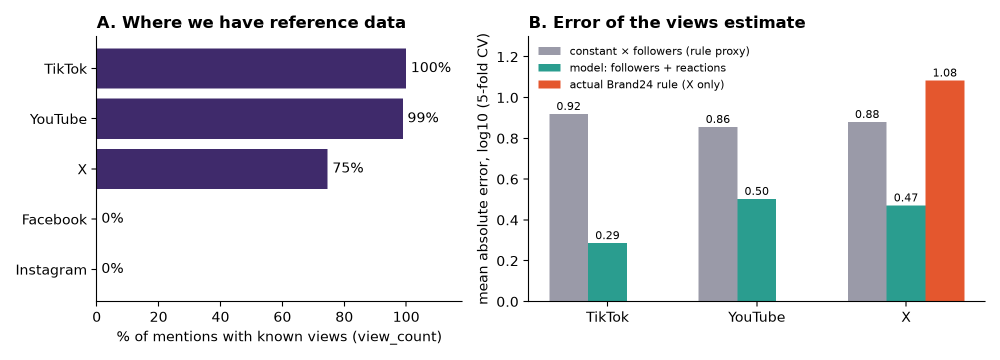
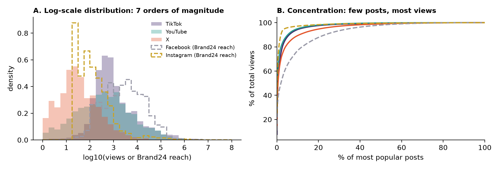

Data exploration card (M1): estimating the visibility of social media posts
AMC, Wrocław University of Science and Technology · client: Brand24 · team and repository: section 7 · as of 19 Oct 2026
1. Research question and hypotheses
Question. On platforms where the number of views is known (TikTok, YouTube, X), can the views of a single post be estimated from the number of followers and reactions (likes, comments, shares) more accurately than by the simple rule "constant × followers", and with what uncertainty? What follows for Facebook and Instagram, where views are not available?
Explicit assumptions. (A1) The reference measure is view_count (views), not reach in the sense of unique audience members, which we do not observe anywhere. (A2) The b24_estimated_reach field is not ground truth: on TikTok and YouTube it equals view_count by construction (100% and 99% of rows), while on X, Facebook and Instagram it is computed by a rule from followers or reactions (reconstructed in section 3). Agreement with it says nothing about real visibility.
| Hypothesis | What would refute it |
|---|
| H1. The model log(views) ~ log(followers) + log(reactions) has a lower error than constant × followers on TikTok, YouTube and X. | The model error (MAE in log10, temporal validation) is not lower than the baseline, and the bootstrap intervals overlap. Preliminary: not refuted (section 3). |
| H2. The actual Brand24 rule on X deviates from views more than the model from H1. | MAE of the Brand24 rule ≤ MAE of the model on the test set. Preliminary: not refuted (1.08 vs 0.47). |
| H3. The relation views ~ followers + reactions transfers between platforms. | A model trained on TikTok and YouTube has an error on X (the only "foreign" test with ground truth) no better than the baseline. For FB and IG the hypothesis cannot be verified. |
2. Data sources and sample scope
- Data:
data/raw/reach_samples_students.csv from Brand24, 12,500 public mentions (2,500 each from X, Instagram, YouTube, Facebook and TikTok), 19 columns, 348 brands, mostly English (85%), country empty in 53%. Dates 2025-01 to 2026-10, but about 85% of rows come from April–August 2026.
- Variables: reference
view_count; predictors author_followers, likes, comments, shares, platform, language, time; context b24_estimated_reach, sentiment. Personal fields (author_name, author_url, url) are not used and will not appear in reports (GDPR).
- External data (review): we found no public dataset with real Facebook or Instagram views. For YouTube there is YouNiverse (ICWSM 2021, about 72 million videos with views and subscribers), for TikTok the INFORMS 2024 competition data; both require checking of fields and licences. Meta Content Library and the TikTok Research API are available only through an institutional application. In M1 we do not supplement the sample with external data.
3. Preliminary exploration results

Fig. 1. A: share of mentions with views. B: mean absolute error of the log10(views) estimate, 5-fold cross-validation (random, preliminary). Script: src/m1_figures.py en, numbers: data/processed/m1_numbers.json.

Fig. 2. A: distribution of log10(views) for TikTok, YouTube and X, and of log10(Brand24 reach) for FB and IG (dashed lines, these are not views). B: share of total views contributed by the most popular posts. Script: src/m1_figures2.py en.
| platform | views | followers | reach = views | reach = 0 | Spearman ρ: views~followers / views~reactions |
|---|
| TikTok | 100% | 100% | 100% | 0% | 0.43 / 0.87 |
| YouTube | 99% | 100% | 99% | 2% | 0.56 / 0.65 |
| X | 75% | 100% | 1% | 11% | 0.41 / 0.54 |
| Facebook | 0% | 73% | – | 9% | no views |
| Instagram | 0% | 8% | – | 43% | no views |
- The distributions are strongly right-skewed (median reach 366, mean 15,652, maximum about 16 million), so we analyse on a log scale, with medians and quantiles. Fig. 2B: the top 1% of posts give 62% (TikTok), 72% (YouTube) and 60% (X) of all views, and the top 10% give 89–95%. The mean is therefore misleading, and we measure error in log10.
- Brand24 rules reconstructed from the data (the client did not provide the constant): TikTok, YouTube: reach = views. X: 0.1 × followers when there are no reactions, otherwise about 700 × reactions (87% of rows exactly). Facebook: max(stepwise coefficient × followers, 100 × reactions), with coefficients of 10% / 6% / 5% / 4% / 2% as account size grows (72% exactly, 95% within 2%). Instagram: 20 × (likes + comments), 98% exactly. Conclusion: reach on X, FB and IG is a deterministic function of the same variables our model would use.
- Preliminary feasibility test (log10, random validation, n = 2,439 / 2,428 / 1,746 for TikTok / YouTube / X): constant × followers 0.92 / 0.86 / 0.88; model with reactions 0.29 / 0.50 / 0.47. On X the actual Brand24 rule gives 1.08 (n = 1,639), i.e. it is typically off by more than an order of magnitude. This is the only place where the Brand24 rule can be compared with views.
4. Measurement plan
- Measure:
view_count as a proxy for visibility (A1). Error: MAE and median relative error in log10. Uncertainty: 80% and 90% prediction intervals from quantile regression calibrated on a hold-out set (alternatively conformal) and bootstrap for errors. We report the coverage of the intervals separately for each platform.
- Validation: temporal split (train until March 2026, test from April 2026), because the sample is uneven in time and not exchangeable; random CV only as a comparison. Split by brand to avoid leakage.
- Models: baseline 1: constant × followers (median ratio from training); baseline 2: the reconstructed Brand24 rule; model: log-log regression with a spline on log(followers) and reactions, with gradient boosting as an upper bound.
- Transfer test (H3): train on TikTok and YouTube, test on X (a platform with views not used in training). For FB and IG there is no ground truth, so we only show the spread of model predictions relative to the Brand24 rule, described as a comparison of two estimates, not an error.
- Additional features to test (each separately and together, as an ablation): age of the post at the time metrics were taken (
metrics_updated_at − created_at), hour and weekday of publication, content language, content length, sentiment, country, brand. Preliminary (same gradient boosting, error in log10): metrics age and content length lower the error on YouTube from 0.50 to 0.46–0.48 and on X from 0.47 to 0.46; on TikTok, and for hour, weekday, language and sentiment, the change is of the order of 0.00–0.01, i.e. practically none. Any feature with higher accuracy must hold up on the temporal set.
- Attempts to obtain other data: (a) check the fields and licence of YouNiverse (YouTube) and the INFORMS 2024 data (TikTok) as an independent validation set for the model views ~ followers + reactions; (b) ask Brand24 to confirm the rules and for any FB/IG posts with real views (e.g. client accounts that shared their statistics); (c) assess an application for Meta Content Library access through the university (unrealistic at the scale of the course).
- Robustness analyses: the role of
metrics_updated_at (metrics age), removing the extreme 1% of observations, posts with zero reactions separately, X posts without view_count (25%, missingness not random).
- The "no effect" condition: if the model error is not significantly lower than the baseline on the temporal set, or the intervals do not have the stated coverage, we say so plainly.
5. Data limitations and possible sources of error
Most important, stated plainly: on Facebook and Instagram we have no ground truth at all, and b24_estimated_reach there is Brand24's rule. Reconstructing it is not an estimate of visibility. Conclusions about FB and IG will therefore be an assumption about transfer from other platforms, not a verified result.
- Construct: views ≠ reach of unique users (one person can view repeatedly), and the client cares about reach.
- Circularity: on TikTok and YouTube reach = views by definition, so comparison with
b24_estimated_reach is empty there. Reactions are partly a consequence of views, which is acceptable for estimation but not for conclusions about influence.
- Sample: brand mentions selected by Brand24 (not random posts), a jump in volume from April 2026, 85% English, about 50% of country missing. Conclusions concern this population of mentions.
- Missing data: Instagram: followers only in 8%, no
shares, 43% zeros; X: 25% without views; missingness depends on the platform. We do not impute silently, we report per platform.
- Snapshot in time: metrics carry a
metrics_updated_at date, and younger posts have fewer views than they will eventually have.
- Law and ethics: public data, no author names in results, in line with GDPR. The Brand24 rules are reconstructed from the data and need to be confirmed by the client.
6. Feasibility by session 5 and state of knowledge
- Done: EDA notebook (
notebooks/eda/01_overview.ipynb), preliminary test (Fig. 1), reconstructed rules. By session 3: codebook (organic mention, ad, spam) and a hand-labelled gold sample of about 100 mentions with the kappa of two coders. By session 4: full pipeline with temporal split, intervals and the transfer test. By session 5: preprint ≤8 pages and a list of our own weak points for red teaming. The data are small (12,500 rows), computations take seconds.
- Risk: the result may turn out partly negative (no validation for FB and IG). This falls within the course's grading criteria.
- Literature (partly checked from abstracts only, to be verified before the preprint): follower count is a poor predictor of actual influence (Cha et al., ICWSM 2010); logarithms of later views are approximately linear in early ones (Szabo and Huberman, CACM 2010); engagement relative to followers is not constant but inverted-U shaped (Wies, Bleier, Edeling, J. Marketing 2023), which justifies stepwise and nonlinear constants; static features poorly predict further cascade growth (Cheng et al., WWW 2014); the validity of conformal intervals requires exchangeability of the sample (Lunde 2023), hence the temporal split. Research access to true reach exists only inside platforms or through applications (Meta Content Library, DSA art. 40). We found no peer-reviewed work on estimating views from followers and reactions alone across multiple platforms.
7. Team and repository
| Role | Person | Scope |
|---|
| Research lead | [to fill in] | question, hypotheses, consistency of the conclusion |
| Data engineer | [to fill in] | data, GDPR, data statement |
| Pipeline engineer | [to fill in] | codebook, gold sample, validation |
| Analyst engineer | [to fill in] | robustness, visualisations, uncertainty |
Repository: [insert link]. We disclose the use of AI (literature and data review, figure code, card draft); session logs are kept locally and will be made available on request.